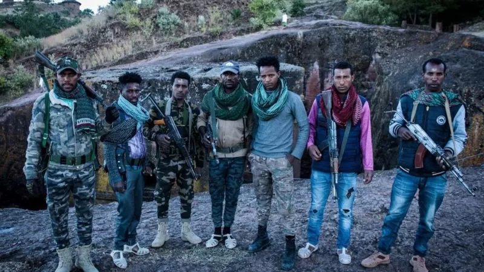
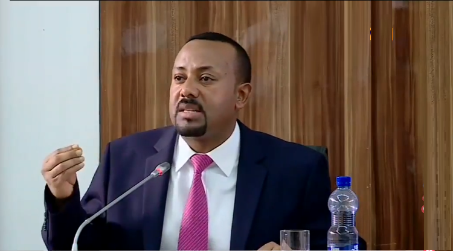
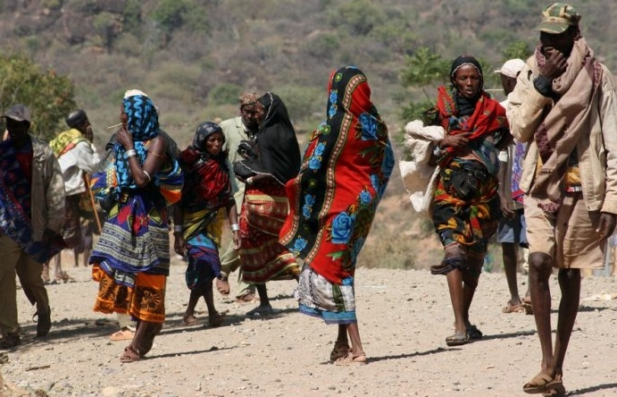
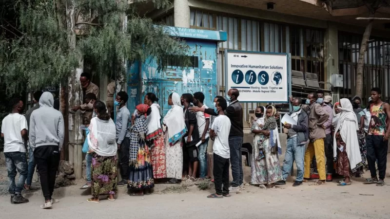
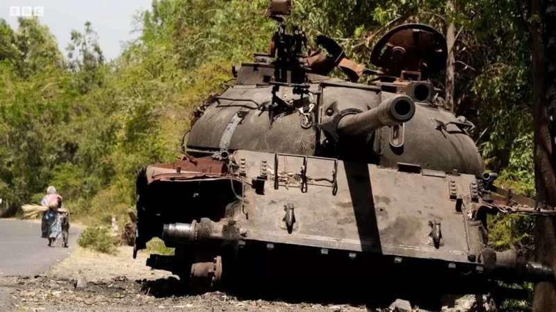
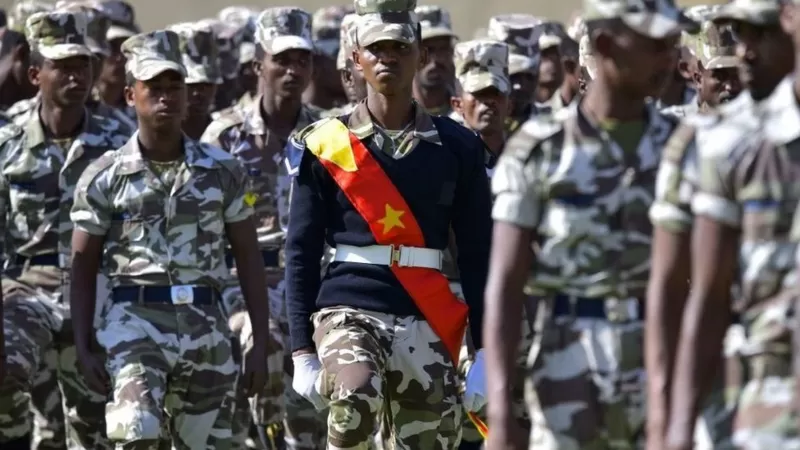
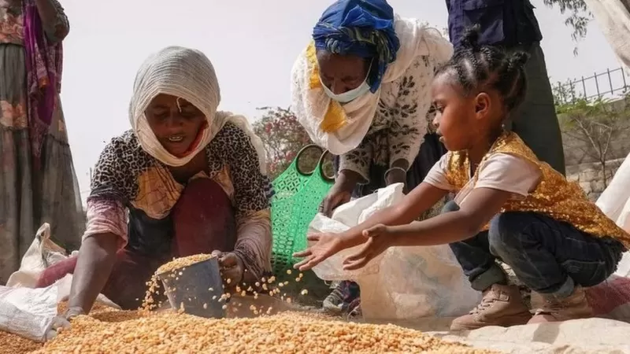
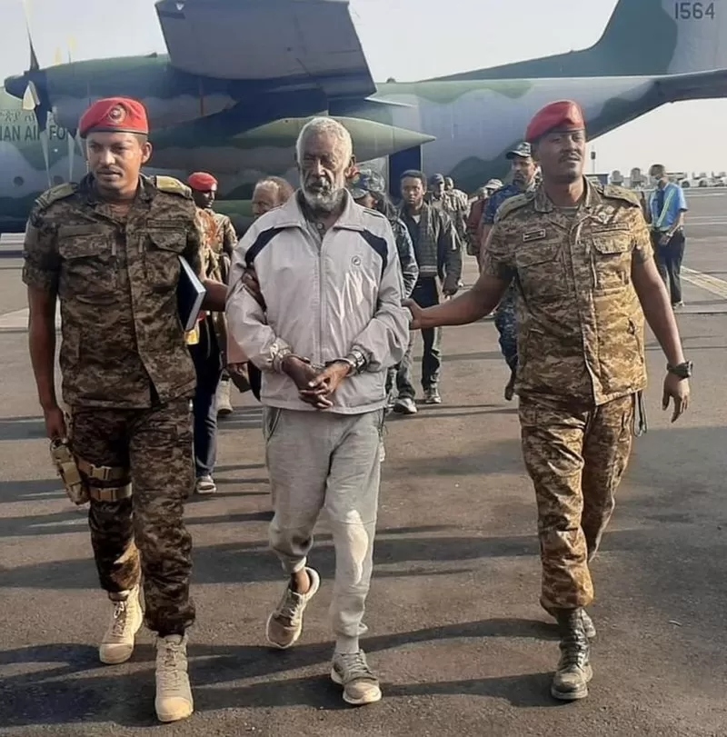

ከየፈርጁ

ፋኖ ማን ነው? በማንስ ይደገፋል?

የጠቅላይ ሚኒስትር ዐቢይ የአራት ዓመት ጉዞ በወፍ በረር ሲቃኝ

የብሔር ግጭት የሚንጣት ሀገር ኢትዮጵያ

በጦርነቱ ምክንያት ከአለም ተቆራርጣ ባለችው መቀለ ኑሮ ምን ይመስላል?

ጄኔራል ፃድቃን፡ ከትግራይ ኃይሎች ጀርባ ያለው ሞተር

21 ሚያዝያ 2022
የተለያዩ ወገኖችም ከዚህ የሁለቱ አካላት ስምምነት በመነሳት፣ ለአስራ ሰባት ወራት ያህል የዘለቀው ጦርነት እንዲያበቃ የሚያስችል ድርድር ማድረግ ወደሚቻልበት ደረጃ ከፍ እንዲል ጥሪ እያቀረቡ ነው። ይህ ለሰብአዊነት ሲባል የተደረሰው ግጭትን የማቆም ውሳኔ፣ ከዚህ ቀደም በተለያዩ ወገኖች ሲካሄድ የነበረው የሽምግልና ጥረት እንዲያንሰራራና ከውጤት እንዲደርስ ያስችላል የሚል ተስፋንም ፈጥሯል። በሰሜን ኢትዮጵያ የሚካሄደው ጦርነት መቋጫ እንዲያገኝ፣ የአፍሪካ ሕብረት የቀድሞውን የናይጄሪያ ፕሬዝዳንትን በልዩ መልዕክተኝነት ሰይሞ መቀለ እና አዲስ አበባ በመመላለስ የሽምግልና ጥረት ሲያደርጉ ቆይተዋል። አሜሪካም እንዲሁ ከጦርነቱ መቀስቀስ በኋላ አሉኝ የምትላቸውን ዲፕሎማቶች በልዩ መልዕክተኛነት ሰይማ ጥረት እያደረገች ነው። ከዚህ ባሻገር ደግሞ የጎረቤት አገር ኬንያ በፕሬዝዳንቷና በከፍተኛ ባለሥልጣኖቿ በኩል የበኩሏን ጥረት እያደረገች እንደሆነ በተደጋጋሚ ተጠቅሷል። ቢሆንም ግን መልዕክተኞቹና ባለሥልጣናቱ የመመለሳቸው ዜና ከመነገሩ ውጪ የእነዚህ ሁሉ አሸማጋዮች ጥረት ይህ ነው የሚባል ውጤት ሳያስገኝ እስካሁን ዘልቋል። በፌደራል መንግሥቱና በትግራይ ኃይሎች በኩልም እየተደረገ ስላለው የማሸማገል ጥረት ምንም የተሰጠ ዝርዝር መረጃም ሆነ ከስምምነት እንዳይደርሱ እንቅፋት ስለሆኑባቸው ጉዳዮች የተባለ ነገር የለም። ነገር ግን ከዚህ ቀደም በህወሓት ከተቀመጡ ቅድመ ሁኔታዎች እና በግጭቱ ውስጥ ተሳታፊ ከሆኑ ኃይሎች በመነሳት ለሚደረገው የሰላም ጥረት እንቅፋት ሊሆኑ የሚችሉ አራት ጉዳዮች ምንድን ናቸው?
በህወሓት የበላይነት ይዘወር የነበረው ኢህአዴግ ወደ ሥልጣን መጥቶ የአገሪቱን አስተዳዳራዊ መዋቅር በማንነት ላይ የተመሰረተ የፌደራል ሥርዓት እንዲሆን ባደረገበት ጊዜ፣ ቀደም ሲል የነበረው ውስጣዊ የአስተዳደር ወሰን ላይ ጉልህ ለውጥ ተደርጓል። ይህንንም ተከትሎ አንዳንድ አካባቢዎች ቀድመው ከነበሩባቸው ክፍለ አገራት አዲስ ወደ ተዋቀሩት ክልሎች ተካትተዋል። ከእነዚህም መካከል በአማራ እና በትግራይ ክልል መካከል የይገባኛል ጥያቄ ሲቀርብባቸው የነበሩ ስፍራዎች ይገኙበታል። እነዚህም በሰሜን ምዕራብ ኢትዮጵያ ከሱዳን ተወሳኝ የሆነው ሰፊና ለም አካባቢ እንዲሁም በምሥራቅ በኩል ከአፋር ጋር ተዋሳኝ በሆኑ ቦታዎች ላይ የይገባኛል ጥያቄ ሲነሳ ቆይቷል። ይህ አካባቢ በስተሰሜን ከኤርትራ ጋር በስተምዕራብ ደግሞ ከሱዳን ጋር በመዋሰኑ ለተለያዩ እንቅስቃሴዎች ወሳኝ ሲሆን፤ በተጨማሪም ለእርሻ አመቺ የሆነ ሰፊ ለም መሬት በመያዙም ምጣኔ ሃብታዊ ጠቀሜታ ያለው ቦታ ነው። በአማራ ክልል በኩል ለዓመታት የዘለቀው የይገባኝል ጥያቄ ሲንከባለል ከቆየ በኋላ ጦርነቱ ትግራይ ውስጥ መቀስቀሱን ተከትሎ በሰሜን ምዕራብ አካባቢ ያለው ቁልፍ ቦታ በአማራ ክልል ኃይሎች ቁጥጥር ስር ከገባ ከአንድ ዓመት በላይ ሆኖታል። የአማራም ሆነ የትግራይ ክልል አካባቢውን በቁጥጥራቸው ስር ለማዋል እና ለማቆየት ከፍ ያለ ፍላጎት ያላቸው ሲሆን፣ ሁለቱም ወገኖች በተለያዩ አጋጣሚዎች በአካባቢው ላይ ያላቸውን ባለቤትነት ለድርድር የማያቀርቡት እንደሆነ ሲገልጹ ቆይተዋል። ስለዚህም ስፍራው ካለው ዘርፈ ብዙ ጠቀሜታና ከታሪካዊ ባለቤትነት እና ይገባኝል ጥያቄ አንጻር ከሁለቱም ወገኖች በኩል የሚንጸባረቀው ጠንካራ አቋም፣ ጦርነቱን ለመቋጨት በሚደረገው ድርድር ላይ ዋነኛው እንቅፋት እንደሚሆን ይታመናል።
የሰሜን ኢትዮጵያው ጦርነት ከመጀመሩ በፊት በትግራይ ክልል የፀጥታ ኃይል ስር በመቶ ሺህ የሚቆጠሩ የልዩ ኃይል አባላት መሰልጠናቸው በተደጋጋሚ ሲነገር እንደነበር ይታወሳል። ህወሓት በሰሜን ዕዝ ላይ ጥቃት ሰንዝሮ ጦርነቱ ከተጀመረ በኋላ ደግሞ በመላው ትግራይ በርካታ ቁጥር ያላቸው ተዋጊዎች የተመለመሉ ሲሆን ግጭቱ ወደ አማራ እና አፋር ክልሎች ሲዛመትም ተሳታፊ ሆነዋል። በሌላ በኩል ከኤርትራ ጋር በተደረገው የድንበር ጦርነት ወቅትና ከዚያም በኋላ ለሁለት አስርት ዓመታት በዘለቀው ፍጥጫ ወቅት የአገሪቱ አብዛኛው የጦር መሳሪያ በትግራይ ክልል ተከማችቶ መቆየቱ እና የሰሜን ኢትዮጵያ ጦርነት ጥቅምት 24 2013 ዓ.ም ሲጀመር በርካታ ከባድ የጦር መሳሪያዎች በህወሓት እጅ እንዲገቡ አድርጓል። ከዚህ በተጨማሪ በርካታ የትግራይ ኃይል አመራሮች የህወሓት የቀድሞ አባላትና ተዋጊዎች የነበሩ መሆናቸው የክልል የፀጥታ ኃይል ቁመና የተለየ መልክ እንዲኖረው ያደርገዋል። በርግጥ በአሁኑ ጊዜ የትግራይ መከላከያ ኃይል በሚባለው ሠራዊት ውስጥ ምን ያህል ተዋጊዎችና የጦር መሳሪያዎች እንዳሉት ባይታወቅም፣ በማንኛውም ወቅት የፌደራሉን መንግሥት የሚገዳደር ኃይል ሊኖረው መቻሉ ግን አያጠያይቅም። በዚህ ሁኔታም በርካታ የነፍስ ወከፍ እና ከባድ መሳሪያዎችን የታጠቀው የትግራይ ኃይል ለፌደራሉ መንግሥት ስጋት ሆኖ ሊቀጥል እንደሚችል ጥርጥር የለውም። የጠቅላይ ሚኒስትር ዐቢይ አስተዳደር ለሰላም ድርድር ሲቀመጥ ይህ ጦር እንዲበተን ወይም ትጥቅ እንዲፈታ ቅድመ ሁኔታ ሊያስቀምጥ ይችላል። በሌላ በኩል በጠላት ተከብቤያለሁ ለሚለው ህወሓት ይህ አማራጭ ሆኖ ሊቀርብ የሚችል ጉዳይ ላይሆን ይችላል። የትግራይ አመራሮችም በተለያዩ አጋጣሚዎች አስረግጠው ሲናገሩ እንደሚሰማው፣ በክልሉ የሚገኘው ኃይል ትጥቅ የመፍታቱ ነገር ለድርድር የማይቀርብ፤ ይልቁንም አለብን ከሚሉት ስጋት አንጻር የጦር ኃይሉን ከማደራጀት ላይቆጠቡ ይችላሉ። ህወሓት በስተሰሜን የኤርትራ፣ በደቡብ የአማራ እንዲሁም በምስራቅ የአፋር የደኅንነት ስጋት ተደቅኖብኛል በማለት ይናገራል። ከፌደራሉ መንግሥቱ በኩልም ክልል ሆኖ ሳለ ከፍተኛ ጦር ኃይል ከገነባ ቡድን ጋር ለንግግር ሊቀመጥ መቻሉ ለሩቅ ተመልካች አጠያያቂ ነው።
ከሰሞኑ ግጭት አብቅቶ የሰላም አየር ሊነፍስ ይችል ይሆናል የሚል ተስፋ እንዲታይ ያደረገው ሁለቱ ተዋጊ ኃይሎች የሰብዓዊ እርዳታ ለማቅረብ ግጭት ለማቆም መስማማታቸው ነው። ይህ ስምምነት ወደ ዘላቂ ሰላም ሊቀየር የሚችለው የሰብዓዊ እርዳታ የታለመለት ቦታ ሲደርስ ነው። በአሁኑ ወቅት አፋር እና ትግራይ ላሉ ሰዎች በተለያዩ ምክንያቶች የሰብዓዊ እርዳታ በበቂ ሁኔታ እየደረሰ አለመሆኑን ዓለም አቀፍ ድርጅቶች እየገለጹ ነው። ምንም እንኳ የፌደራል መንግሥቱ ሐሙስ መጋቢት 22/2014 ላይ በአብአላ በኩል የእርዳታ አቅርቦት ወደ ትግራይ መጓጓዝ መጀመሩን ይፋ ቢያደርግም፤ የየብስ ትራንስፖርቱ የሚስተጓጎል ከሆነ በጀምር ያለውን ስምምነት ሊያፈርስ ይችላል። የሰብዓዊ እርዳታ በየብስ ማቅረብ ሁነኛ አማራጭ ነው። የአሜሪካ የተራድኦ ድርጅት ኃላፊ ሳማንታ ፓዎር አውሮፕላኖች አነስተኛ የጭነት አቅም ያላቸው ሲሆን፣ ዋጋቸውም አይቀምስም ብለው ነበር። ታዲያ የህወሓት ኃይሎች በአፋር ክልል የሚገኘውን የሰብዓዊ እርዳታ መተላላፊያ፣ አብአላን ጨምሮ ሌሎች የክልሉን ቦታዎች ይዘው መቀመጣቸው ለግጭት በር ሊከፍት ይችላል። በግጭት ምክንያት እርዳታ መድረስ ካልቻለ ደግሞ፣ ዘላቂ ሰላም ማስፈን ቀርቶ ለሰብዓዊነት ሲባል የተደረው ግጭት የማቆም ስምምነት ጥያቄ ውስጥ ሊገባ ይችላል። በተጨማሪም ለበርካታ ወራት ተቋርጠው የቆዩት መሠረታዊ አግልገሎቶች ማለትም የስልክ፣ የኤለክትሪክ፣ የባንክና የመሳሰሉት አቅርቦቶችን መልሶ ለማስጀመር የሚቀመጡ ቅድመ ሁኔታዎች የሚኖሩ ከሆነ ሌላ እንቅፋት ሊፈጠር ይችላል።
ሌላኛው ለሰሜን ኢትዮጵያው ቀውስ ሰላም እንዳይመጣ እንቅፋት ሊሆን የሚችሉት ከሕግ ጋር የተያያዙ ጥያቄዎች የሚመለሱባቸው መንገዶች ሊሆኑ ይችላሉ። የአገሪቱ ፓርላማ ከፌደራሉ መንግሥት ጋር ጦር የተማዘዘውን ህወሓት አሸባሪ ሲል ፈርጆታል። ይህ ብቻ አይደለም ሁሉም የህወሓት ከፍተኛ አመራሮች ሊባል በሚችል ደረጃ በአገር ክህደትና በሌሎች ከባድ የሕግ ጥሰቶች ክስ ተመስርቶባቸው የእስር ማዘዣ ወጥቶባቸዋል። የፌደራሉ መንግሥት አሸባሪ ሲል ከፈረጀው፤ በአገር ክህደት ክስ መስርቶ የእስር ማዘዣ ካወጣባቸው ግለሰቦች ጋር ሰላም ለማውረድ በአንድ ጠረጴዛ ዙሪያ ተቀምጦ ሊወያይ ይችላል? መልስ የሚሻ ጥያቄ ነው። ህወሓትስ አሸባሪ ተብሎ እና አባላቱ ላይ የእስር ማዘዣ ካወጣባቸው አስተዳደር ጋር ስለ ሰላም ለመነጋገር ዝግጁ ይሆናል? የፌደራሉ መንግሥት ህወሓትን ከሽብር ዝርዝር ውስጥ ለማስወጣት እና በህወሓት አመራሮች ላይ ያቀረበውን ክስ ለማቋረጥ ምን ያህል ርቀት ይሄዳል? የሚገጥመውስ ተግዳሮትን እንዴት ይወጣዋል? ቀደም ሲል ህወሓት ከፌደራሉ መንግሥት ጋር ለመነጋገር ካቀረባቸው ቅድመ ሁኔታዎች መካከል አንዱ እስር ይቁም፤ የታሰሩ ይፈቱ የሚለው ይገኝበታል። የፌደራል መንግሥቱ ከጥቂት ወራት በፊት በቁጥጥር ስር ከነበሩት ከፍተኛ የህወሓት አመራሮች መካከል ዋነኞቹን መልቀቁን ተከትሎ ከደጋፊዎቹ ሳይቀር ከባድ ተቃውሞ ገጥሞት መነጋገሪያ ሆኖ ከርሟል። ከዚህ አንጻር በሕግ ይፈለጋሉ የተባሉና ንብረታቸው የተያዘባቸው ከፍተኛ የህወሓት አመራሮችን ክስ መሰረዝና በእስር ላይ ያሉትንም መልቀቅ የሚኖረው ጫና ምናልባትም ለሚኖረው የሰላም ጥረት ሌላ እንቅፋት ሊሆን ይችላል።